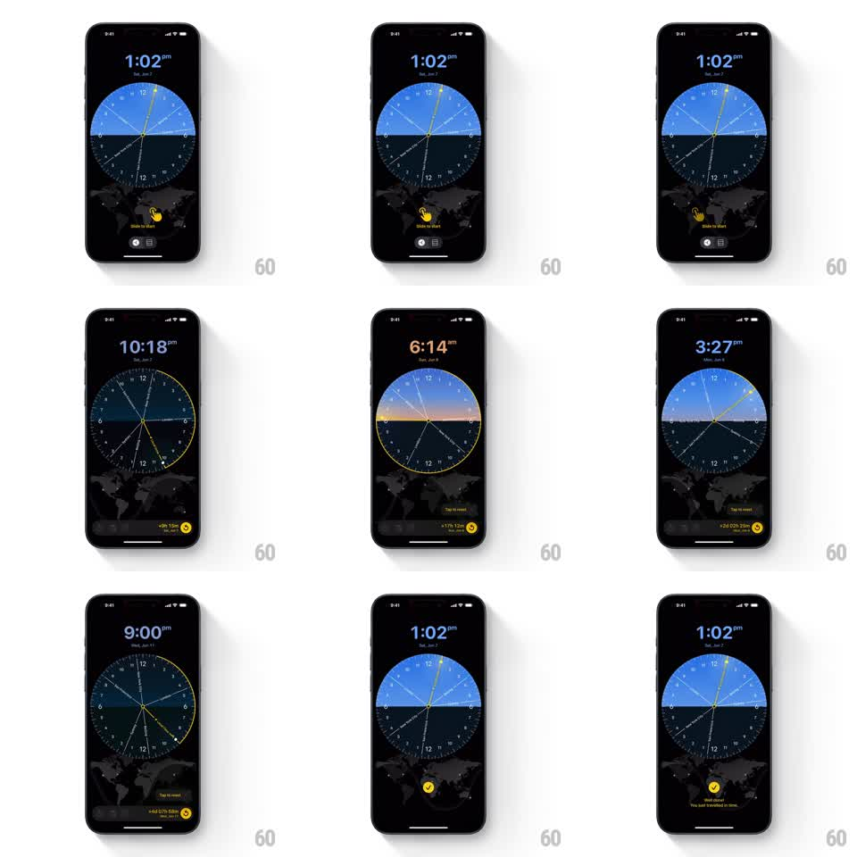

Media
Frame-by-frame

Rebuild this interaction 1:1: World Clock Master's onboarding - a "Slide to Start" coachmark invites the user to drag the 24-hour dial; spinning it shifts the day-night gradient and clock colors, ending in a bouncy success state.

Rebuild this interaction 1:1: World Clock Master's onboarding - a "Slide to Start" coachmark invites the user to drag the 24-hour dial; spinning it shifts the day-night gradient and clock colors, ending in a bouncy success state.
## Integration
Integration: stack-agnostic spec - springs given as stiffness/damping, timed motions as duration + curve; map every value to your framework and animation library of choice.
## Scene
Dark screen with a large 24-hour circular dial at center (day-blue upper half, night-dark lower half, hour ticks, hands), a faint world map behind, a big time readout on top ("1:02 pm" with date), and a yellow hand coachmark at the dial's bottom saying "Slide to Start". Bottom shows a live offset chip ("+9h 12m").
## Motion spec
Pattern: coached dial spin with dynamic day-night theming and a success bounce.
- The coachmark hand drifts in a small suggested arc (+-20deg, 1.6s loop) until the first touch, then fades out (200ms).
- Dragging rotates the dial 1:1 (angular tracking); the day/night split rotates with it and the header time updates continuously (1:02 pm -> 10:18 am -> 6:14 am...).
- The header time re-colors by phase: blue in daylight, orange near sunrise/sunset, white at night (200ms crossfades at phase boundaries).
- Release keeps momentum (friction ~0.94/frame); the offset chip counts the accumulated travel.
- After the user travels far enough, the dial eases back to the real time (spring ~200/16) and the success state bounces in: a yellow check pops (scale 0 -> 1.2 -> 1, spring ~320/13) with "Well done! You just travelled in time." sliding up (spring ~320/24).
## Calibration
- The dial, map shadow, and header color are one system: they all derive from the same angle, updated in the same frame.
- The success bounce must wait for the dial to settle - celebrate the arrival, not the spin.
## Reduced motion
Dial rotates without momentum; success state fades in (250ms).
## Don't miss
- The dial's day half is a true gradient arc (dawn and dusk bands), not a hard two-tone split.
- The coachmark never blocks the dial's center - it sits at the bottom rim.